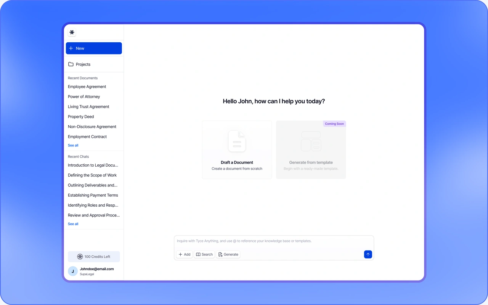
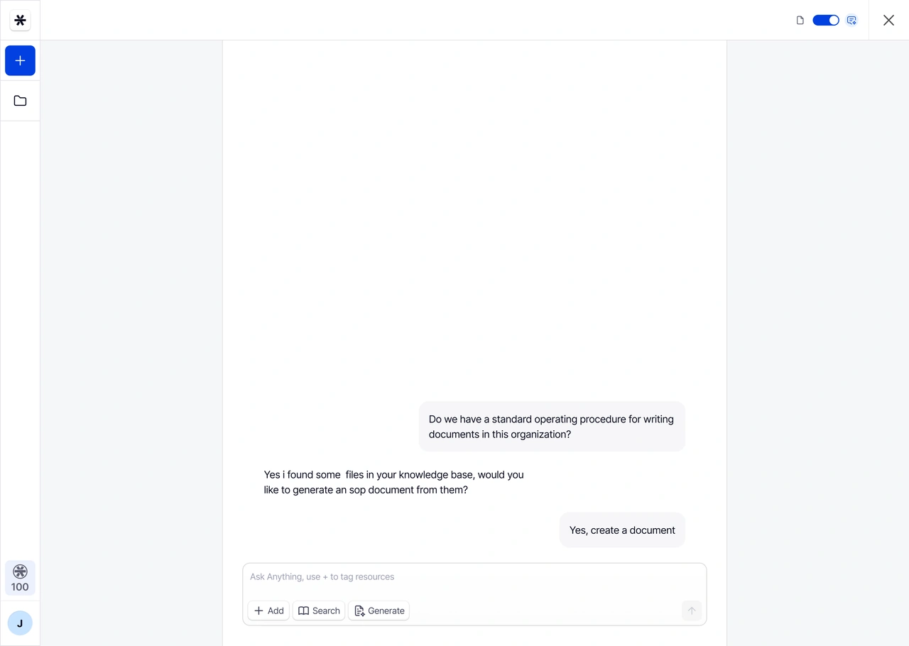

Overview
This startup set out to make document creation as simple as writing a prompt. The platform combined AI, reusable templates, and company data to generate contracts, reports, meeting summaries, and other business documents in minutes.
I designed the MVP from wireframes through high fidelity UI, turning a well defined product vision into a production ready experience.

Opportunity
Creating business documents often required manual work, repetitive editing, or support from specialists. The team saw an opportunity to automate much of that process with AI while keeping people in control of the final document.
The startup already had clear requirements, user stories, and product goals. My focus was designing an experience that made AI generated content easy to create, review, and refine.
Design Process
The product strategy, user stories, and core requirements were already defined, allowing the design process to focus on interaction design and execution.
I began with mid fidelity wireframes to explore layouts, user flows, and AI interactions. Multiple concepts were tested and refined before the strongest patterns were carried into the final interface. This approach helped validate key decisions early while keeping visual design separate from workflow design.
The final product translated complex AI capabilities into familiar document editing experiences that felt intuitive and easy to navigate.



User flow for creating a document from a prompt

The editor supported multiple layouts, allowing users to focus on writing, AI collaboration, or both. The formatting toolbar mirrored familiar document editors, reducing the learning curve

Context aware menus kept common actions near the cursor, reducing navigation and speeding up editing. Actions appeared only when relevant.

Users could combine templates, transcripts, notes, and articles to give AI richer context, producing more accurate, reusable documents.

Users could ask questions directly to connected documents instead of manual searching. Supporting sources appeared with responses to boost transparency and confidence.

The workspace combined recent documents, projects, and AI chats, making it easier to switch between creating, editing, and managing without losing context.
Outcome
The finished MVP helped the startup launch its product and secure acceptance into two accelerator programs.
As AI capabilities rapidly evolved, the company shifted its focus toward construction documentation. Rather than rebuilding from scratch, the team carried forward the workflows, interaction patterns, and product foundation from the original MVP into the new platform.
Reflection
This project reinforced the value of designing flexible product foundations. While the target market changed, the underlying workflows remained useful because they were built around how people create, edit, and review documents rather than around a single AI capability.
It also gave me early experience designing AI assisted workflows before established interaction patterns existed, requiring thoughtful decisions about trust, transparency, and user control.